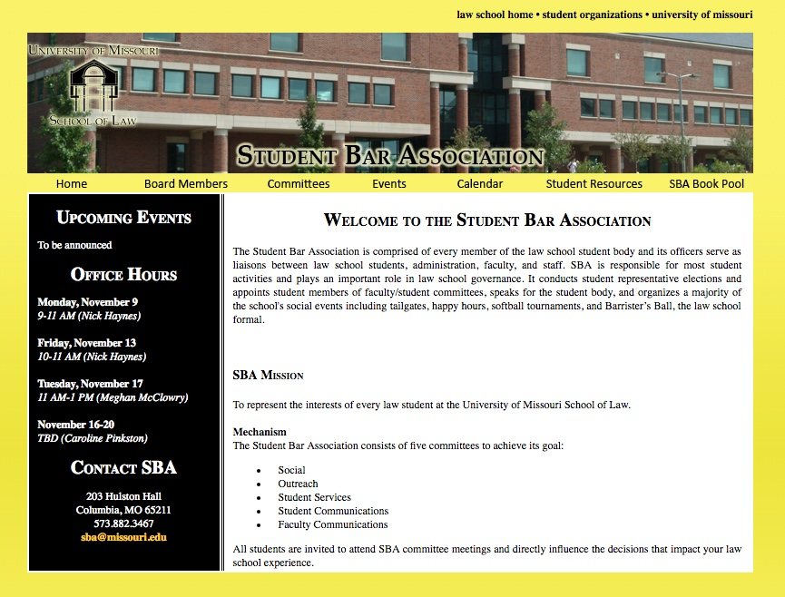

Show-Me Coders-A showcase of skills learned in conjunction with Udacity and Grow With Google

markparkinson.org-State Representative Mark Parkinson
(defunct-term limited January 2017)
Mizzou Law SBA-The student government of the University of Missouri School of Law (developed and maintained 2009-2012)